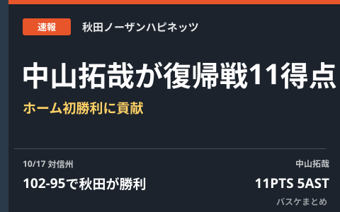

秋田 中山拓哉、復帰戦で11得点5アシスト ホーム初勝利に貢献「しっかりと恩返しをしていく」

10月17日に行われたB.LEAGUE PREMIERの一戦で、秋田ノーザンハピネッツはホームに信州ブレイブウォリアーズを迎え、102-95で勝利しました。この試合に復帰した中山拓哉選手が11得点5アシストを記録し、バスケット・カウントによると今シーズンのホーム初勝利に貢献したと報じられています。試合後には「みなさんにしっかりと恩返しをしていく」と語ったとのことです。
秋田、信州との撃ち合いを102-95で制す
秋田と信州の対戦は102-95という高得点の展開になりました。秋田はヤニー・ウェッツェルの31得点・12リバウンド、マーク・スミスの27得点・5アシストと外国籍の2人が引っ張る形で試合をコントロールし、ホームで勝利を収めています。両チームの対戦詳細はB.LEAGUE公式の試合詳細ページで確認できます。
| 項目 | 内容 |
|---|---|
| 対戦 | 秋田ノーザンハピネッツ 102-95 信州ブレイブウォリアーズ |
| 試合日 | 2026年10月17日 |
| 中山拓哉選手のスタッツ | 11得点・5アシスト（復帰戦） |
復帰戦の中山拓哉が11得点5アシスト、「みなさんにしっかりと恩返しをしていく」
この試合に復帰した中山拓哉選手は11得点5アシストを記録。バスケット・カウントの報道によると、この活躍が秋田にとって今シーズンのホーム初勝利につながったとされています。中山選手は試合後、「みなさんにしっかりと恩返しをしていく」とコメントしたと伝えられており、復帰直後からチームに存在感を示した一戦となりました。
秋田にとっての意味
開幕から1カ月ほどが経過したB.PREMIERで、秋田にとってはホームでの初勝利という節目の試合になりました。中山選手のような経験のあるロールプレーヤーが復帰直後から結果を残したことは、今後のローテーションやチームの底上げにとっても好材料といえそうです。秋田の今後の試合日程や順位の推移は順位・日程カテゴリでも随時取り上げていきます。
Q. この試合のフルスタッツはどこで見られる？
A. B.LEAGUE公式サイトの試合詳細（ボックススコア）ページで確認できます。本まとめは報道・公示をもとに編集部が要約したものです。
出典：バスケット・カウント「復帰戦で11得点5アシスト、秋田ノーザンハピネッツのホーム初勝利に貢献した中山拓哉『みなさんにしっかりと恩返しをしていく』」／B.LEAGUE公式 試合詳細ページ
https://basket-count.com/article/detail/276850
https://www.bleague.jp/game_detail/?ScheduleKey=506468